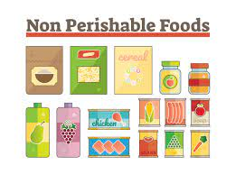
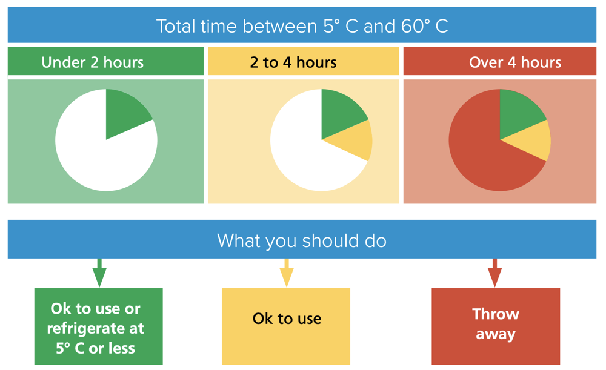
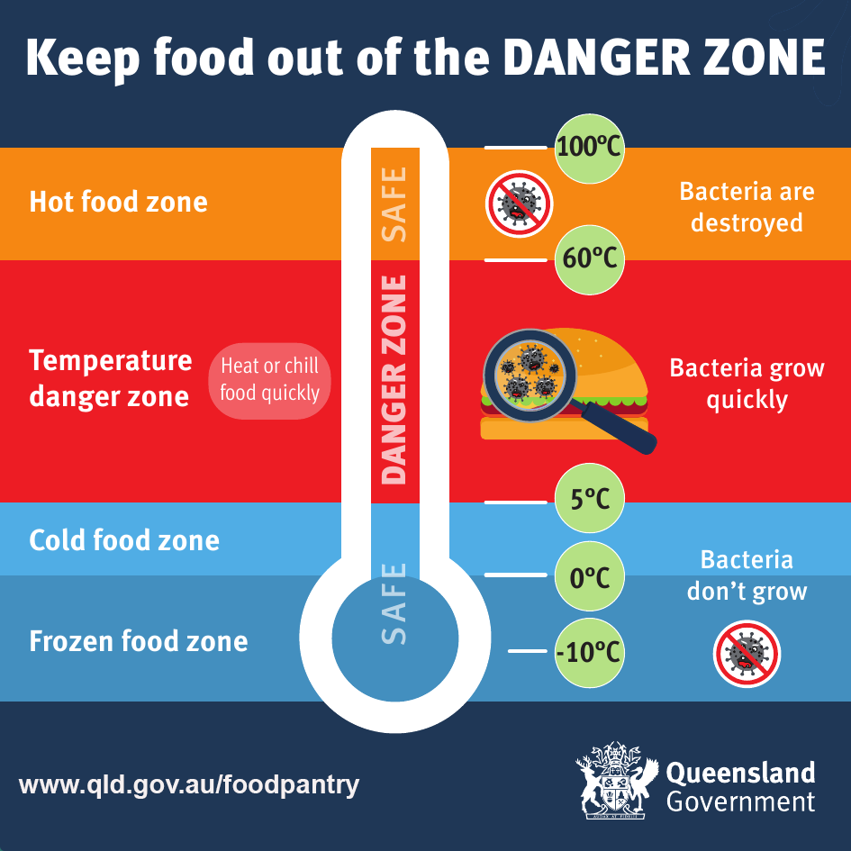

HOW TO NIGHT MARKET LEGALLY
LIABILITY
DISCLAIMER: the following only applies to the U.S.
TLDR
Here’s a handy LIABILITY FLOW CHART that will get you started.
Also please check out our friends at the Freedge’s manifesto the Liability Myth , that goes into detail about the stigma-perpetuating and non-profit-industrial-complex-supporting implications of all the below.
For those who want to get in the nitty gritty… keep reading
So you need to know that
1. Getting sued for donating food is not a thing
This report by the University of Arkansas School of Law found that
“lawsuits arising out of the donation or provision of recovered food are extremely uncommon. Indeed, a thorough search of filings and review of reported decisions did not turn up a single case that involved food donation-related liability or any attempts to get around the protections offered by the Bill Emerson Act. Additionally, several leading food recovery experts and antihunger advocates report that they are unaware of any such actual or threatened lawsuits. The absence of litigation or other disputes related to food donation demonstrates that fear of lawsuits or other negative publicity related to mishaps with donated food are overstated and largely illusory barriers to food recovery.”
2. You and your donors are protected under federal law… as long as you are a non-profit
If you’re already a non-profit, the federal Bill Emerson Good Samaritan Food Donation Act is your best friend, and will keep you safe as long as you fulfill these 4 requirements:
The donation must be made to a nonprofit organization.
The food must be donated to a nonprofit organization in good faith, meaning that the food must be donated with the honest belief that it is safe to eat
The donated items must be either apparently wholesome food or apparently fit grocery products
The nonprofit organization that receives the donated food must distribute it to needy individuals, who must not pay anything of monetary value for the donated food
For more info:
Liability Protection Food Donation.
Cool. I’m not a non-profit. Now what?
It’s ok! You have options
1. You’re probably fine anyway (see point 1 above)
Also, seriously, you’re fine if you’re in certain states (like CA, CO), so it’s worth looking at the specifics for your state. Also, good for you, for not being a part of this horrendous system :)
2. Get a fiscal sponsor
A fiscal sponsor is basically a 501(c)(3) non-profit that agrees to sponsor you such that you share their 501(c)(3) non-profit status. They also receive your money, so you’ll have to send them a budget once a year (which can be $0).
Relationships with fiscal sponsors may vary, but, luckily, we have a solution for you!
Our fiscal sponsor, Left Lovers (yes, it’s a real non-profit, not a movie about sexy vampires or a marxist cell) is very happy to sponsor food recovery efforts without taking a chunk of your money. The only thing they might ask is a yearly insurance fee to cover your operation. If you’re interested in being sponsored by Left Lovers, fill in this fiscal sponsorship form and contact ernst@freedge.org.
If Left Lovers sounds too much like a free-love anarchist commune for you, here’s a database of local fiscal sponsors.
“If you are interested in some of the different ways fiscal sponsorship can be done, Gregory Colvin and Stephanie Petit have a good summary of the different types of fiscal sponsorships”
(paraphrased from big door brigade)
3. Become a 501(c)(3) non-profit
Might be worth it depending on your needs, but i’m sure not gonna get into that here :)
COMPARE YOUR OPTIONS
Here’s a good comparison of your options for acquiring non-profit-status from big door brigade.
You might have noticed me citing big door brigade twice in a row, and that’s because it’s a compilation of resources for mutual aid orgs that’s worth checking out and because everything Dean Spade touches is gold.
So you say i’m covered, but i have questions!
I know! This is complicated!
Here are some FAQs compiled by the USDA
Keep reading for the biggies:
What kinds of donors are covered?
This may vary by state, but usually it’ll be everyone except private individuals, aka home kitchens.
“Persons,” “gleaners,” and “nonprofit organizations” all receive protection from the Bill Emerson Act. The very broad category of covered persons embraces individuals, corporations, partnerships, organizations, associations or governmental entities. It expressly includes retail grocers, wholesalers, hotels, motels, manufacturers, restaurants, caterers, farmers, and nonprofit food distributors or hospitals. Protection from liability extends to officers, directors, partners, deacons, trustees, council members, or other elected or appointed individuals responsible for governance of covered entities.
(from UARK’s Legal Guide To Food Recovery)
What food is covered?
Basically everything.
- Field gleaning: The collection of crops from farmers’ fields that have already been mechanically harvested or from fields where it is not economically profitable to harvest. Gleaning is also used to describe the donation of raw agricultural products that have already been harvested and are being stored at a farm or packing house.
- Perishable produce rescue/salvage: The collection of perishable produce from wholesale and retail sources, including wholesale markets, supermarkets, and farmers’ markets.
- Perishable and prepared food rescue: The collection of prepared foods from the food service industry, including restaurants, hospital, caterers, and cafeterias.
- Nonperishable processed food collection: The collection of processed foods, usually with long shelf lives, from sources such as manufacturers, supermarkets, distributors, grocery stores, and food drives.
(from UARK’s Legal Guide To Food Recovery)
When am i liable?
Uuuuhm when you’re a d*** and give people rotten food on purpose.
In legalese:
The exemption from liability is not absolute. Acts or omissions constituting “gross negligence” or “intentional misconduct” which result in the death or injury of “an ultimate user or recipient” are not exempted.
Gross negligence: A “voluntary and conscious conduct (including a failure to act) by a person who, at the time of the conduct, knew that the conduct was likely to be harmful to the health or well-being of another person.” A finding of gross negligence requires consideration of several factors, including:
- The type of food involved
- The recommended sell by date: The recommended sell by date alone should not be determinative; it must be considered in light of the type of food involved.
To understand how these first two factors are intended to operate, consider the example of the donation of a box of cereal with that of milk or chicken addressed in the House Report on the Bill Emerson Act. The “box of cereal that is provided to a food pantry just before or even after the date of retail sale would be perfectly safe for consumption, whereas a carton of milk or container of fresh poultry that is donated just beyond the retail sales date could be dangerous to a person’s health.”
Intentional misconduct: a “conduct by a person with knowledge (at the time of the conduct) that the conduct is harmful to the health or well-being of another person.”
(from the The Legal Guide to the Bill Emerson Good Samaritan Food Donation Act by James Haley)
What’s the deal with expiration dates, best-by labels, etc?
Even the FDA says they’re BS
Basically ignore best-by dates, pay attention to use-by, but mostly use your senses, including common sense :)
What if the laws in my state say something different?
Happily, it doesn’t really matter if your state’s laws suck more than the federal one because federal trumps state:
“The Department of Justice (DOJ) Office of Legal Counsel has interpreted the Act (Bill Emerson Act) as preempting state laws that provide less liability protection to donors. Under the DOJ’s interpretation, state laws may provide greater protection against liability, but not less.”
(from USDA FAQs)
Buuuuut, sometimes, your state’s laws can help you out. like if they specifically protect you if you donate expired food directly to individuals (thanks CA!) . so it’s worth checking out.
State-specific laws
All states
slightly outdated LOL: liability protection by state (2017).
(from the Harvard Law School Food Law and Policy Clinic Dont Waste Donate)
California
On January 1, 2018, California enacted the California Good Samaritan Food Donation Act (AB 1219), which provides liability protections for entities that make good faith donations of surplus food. The law clarifies and expands liability protections for donated surplus food by:
- Explicitly stating that donation of past-date food is subject to liability protection
- Expanding liability protection to donations made by food facilities, which are subject to food safety regulations and regular inspections, directly to individuals for consumption (direct donation).
PERMITS
Ok great! Now we got all scary liability stuff out of the way, you want to start giving away some food! So if your goal is to keep things legal, you’re going to need spme permits.
This stuff varies a lot by state, so it may take some figuring out, but I’m going to walk through what you need in CA:
FOOD OPERATION/ HEALTH PERMIT
The health permit you need is going to depend on:
- The type of food you’re going to be dealing with: 
perishable (ex: meat, dairy, cooked meals)
non-perishable (cans, bread)
produce (fruits, vegeables, nuts)
- What you’re going to do with that food: storing, portioning, reheating, cooking…

The Night Market recovers food from restaurants and other eateries so:
you’ll be dealing with perishable food (cooked meals) as well as non-perishables and produce
you’ll often have to do same day storage and portion out the food into individual containers.
You will have to go to your local county web page, usually under environmental health or food safety, and find the application form for a food operation or equivalent permit.
California: LSCFO - DOS AND DON’TS
In CA, as of 2019 there’s a new category of food operation called LSCFO thanks to Assembly Bill (AB) 2178, which “defined a limited service charitable feeding operation (LSCFO) as a nonprofit charitable organization that provides food service to a consumer solely for providing charit and exempts LSCFO from the definition of a food facility.”
(from https://www.sfdph.org/dph/EH/Food/lscfo.asp)
Everyone loves a good flowchart. Here is the LSCFO flow chart that will get you started.
At our Night Market, because we deal with perishables and commercially prepared foods that we portion out ourselves that we redistribute on the same day, and we are not partnered with a food bank, we are registered as a LSCFO category 3.
How do I register?
Fill in your local county LSCFO application. This is the information you’ll have to provide
- Name, physical address, internet website, and telephone number of the nonprofit charitable organization conducting the LSCFO.
- Name and contact information of a site representative of the LSCFO.
- Operating days and hours of the LSCFO.
Pay a fee. Yep. It’s around $200.
Do we need food safety training?
Nope, it’s not required, you just need to follow Best Management practices (BMP). Here’s a summary of those provided by our own Yolo County (BMP ), but I’m going to go over the key aspects below.
Where can food be served?
At the LSCFO facility
Outdoors for up to 4h a day. For this you’ll need a permit with the local city parks department or equivalent (see below)
What food can be served?
Everything (including expired food)
Exceptions
Cooked food from unregistered home kitchens
- “microenterprise” home kitchens are allowed (see Foodnome)
- commercially pre-packaged foods, baked goods are allowed.
Salvage operations (So i guess no dumpster diving treasures :( )
Expired baby food and infant formula.
Equipment, utensils, food containers
Must be food-grade
Food storage
THIS IS IMPORTANT !!!
All food
- at least six inches off the floor or on a pallet
- not be stored in restrooms or garages
- raw produce should be stored below ready-to-eat foods to prevent accidental cross-contamination.
Potentially hazardous food (PHF): (i.e., deli meats, dairy products, cooked meats, cooked rice, cooked vegetables, etc.) are perishable and must be kept at 41°F or below. They can leave cold storage for:
- up to 30 minutes for transport
- up to 2 hours for active preparation or portioning
- up to 4 hours at a time in total. After 4h they should be served immediately or dumped.

A permanently affixed thermometer in cold holding equipment used for PHFs should be readily visible and placed in the warmest part of each refrigeration unit.

How to serve food
- Hair must be contained
- Food must be covered and protected
- Portioning food: use food-grade utensils, portion into food-grade containers and label them
- If food has been served to someone, it can’t be returned and served to someone else
- Use commercial-grade hand sanitizer or a handwash station to wash hands previously
Basically what this means is that you’ll have to keep an eye out to make sure people don’t open boxes and then leave them there, as those boxes are theoretically not fit for human consumption anymore.
EVENT PERMIT
You will have to go to your local city web page, usually under Parks and Rec, and find the application form for an event or space reservation permit.
It will look something like this: Application Fields and Picnic
TAX DEDUCTIONS
Wow ok, you’re ready to go to start donating food!! The last thing we’re going to talk about is the cherry on top for some businesses, which is that they get tax deductions for donating stuff, and people loooooove not paying taxes. So if you want to potentially attract some donors this way, here’s how to do it.
Requirements for you to receive donations
- You have to be a non-profit.
Yep. To offer tax deductions to any business you’re going to have to have 501(c)(3) non profit status, so that means either you’ve done the paperwork to become one, or you’re fiscally sponsored by one (see previous section i’m not a non-profit)
Your non-profit must serve the needy
Your non-profit must not charge money
What you have to provide the donor
You should be able to provide to the donating business a statement with the following:
- a description of the donated food, with the date
- a statement that it’ll be used 1) by a non-profit that 2) serves the needy and 3) does not charge money.
- a statement that you’re a tax-exempt non-profit (under federal I.R.C 501(c)(3) (yeah idk what that means either)) and you’ll have to provide the tax-exempt identification number (it should look something like this: affidavit for exemption)
- a statement that adequate records will be kept and made available to the IRS upon request.
As the people who are receiving the donation, that’s all you gotta know, the donor can figure out the rest (aka how much taxes they don’t have to pay).
For more info
RESOURCES
Useful resources that were used to compile this guide.
Bill Emerson Good Samaritan Food Donation Act
FAQs compiled by the USDA about the Bill Emerson Good Samaritan Food Donation Act
UARK’s Legal Guide To Food Recovery
The Legal Guide to the Bill Emerson Good Samaritan Food Donation Act by James Haley
the Harvard Law School Food Law and Policy Clinic Dont Waste Donate
FDA: consumer confusion with food labels